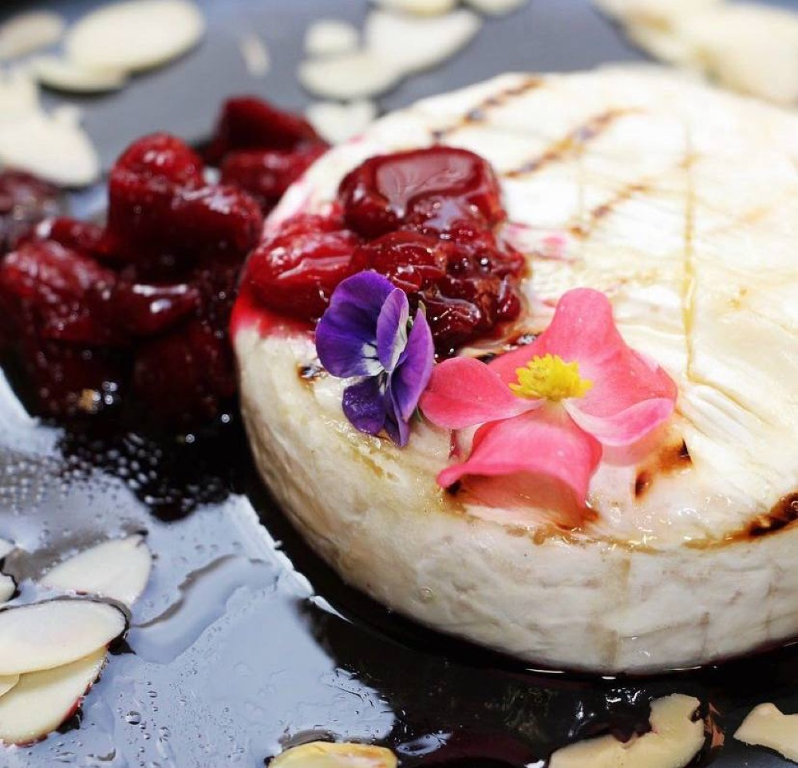
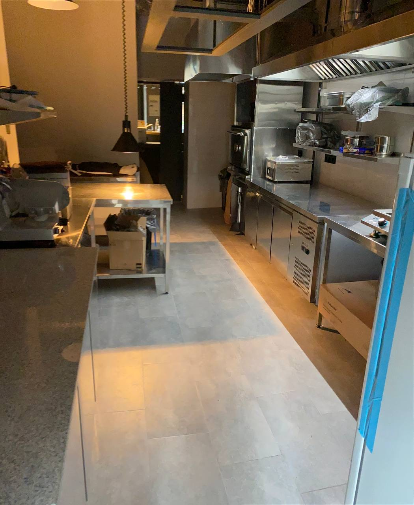

Відкриємо ваш заклад за техкартою шефа
Від порожнього приміщення до першого гостя за 1,5–3 місяці. Концепція, кухня, меню, обладнання й команда розписані до дрібниць, а ціна фіксована й залежить від площі: від $2 800.
 старткухня ще в плівці
через 1,5–3 місяціперший гість
старткухня ще в плівці
через 1,5–3 місяціперший гість
Відкриваємо формати: шаурма, кав'ярня, піцерія, суші, бургерна, dark kitchen, пекарня, стрітфуд, кафе при ЖК, пивний ресторан, чебуречна, кондитерська — по всій Україні.
 шефДмитро
у HoReCaз 2012 року
шефДмитро
у HoReCaз 2012 року
Техкарту складає бренд-шеф, а не менеджер агенції
Дмитро в HoReCa з 2012 року. За дипломом технолог харчової промисловості, має закордонну практику. Відкривав і перезапускав понад 20 закладів по Україні: від фуд-кортів до пивного ресторану.
Відкриваю не заради відкриття, а заради репутації. І з душею, бо люблю те, що роблю.
- Закладів
- 20+ відкрито й перезапущено
- Географія
- від Харкова до Кіровоградщини
- Освіта
- технолог харчової промисловості
- Запуски
- бренд-шеф мережі Red Cat Brewery



Так готує шеф, який складатиме меню для вашого закладу.
Усе для відкриття — в одній техкарті
Ви не шукаєте окремо дизайнера, постачальників, кухаря й касову систему. Усе це шеф бере на себе, а вам лишаються рішення.
- розрахунок
- бізнес-план
- аналіз локації та аудиторії
- місце
- підбір приміщення
- дизайн і контроль підрядників
- оформлення
- кухня
- обладнання
- постачальники
- меню
- техкарти
- бренд
- концепція і назва
- упаковка
- уніформа
- команда
- підбір персоналу
- навчання персоналу
- запуск
- документи
- каса й автоматизація
- просування до відкриття
- відкриття
18 позицій в одних руках. Обладнання й постачальників підберемо самі або працюємо з вашими.
Від першої розмови до першого гостя
-
старт
Зустріч і консультація
Розбираємо ідею, формат, бюджет і місце.
-
до договору
Первинний прорахунок
Ви бачите цифри ще до договору.
-
договір
Договір
[ПОТРІБНО: що фіксується — терміни, кошторис, оплата частинами чи одразу]
-

запуск
Приміщення і кухня
Ремонт, обладнання, постачальники. Шеф контролює підрядників, щоб кухня працювала так, як розписано в техкарті.
-

до відкриття
Меню, техкарти, команда
Страви відпрацьовані, персонал навчений до відкриття.
-

1,5–3 місяці
Відкриття
Заклад приймає перших гостей.
-

+1 місяць
Місяць супроводу
Шеф поруч, поки заклад виходить на робочий ритм.